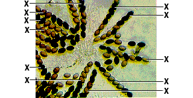

Study this small section of a slide of Sordaria to determine if crossing over has occurred in the asci designated by an X.

Courtesy of Carolina Biological Supply Company.
If the ascospores are arranged 4 dark/4 light, count the ascus as "No crossing over." If the arrangement of ascospores is in any other combination, count it as "Crossing over." (Keep track of your counts with paper and pencil.)
In this exercise, we are interested only in asci that form when mating occurs between the black-spore strain and the tan-spore strain, so ignore any asci that have all black spores or all tan spores. Occasionally the asci rupture and spores escape. You can see them here as individual spores not in one of the possible arrangements, so don't include them in your count.